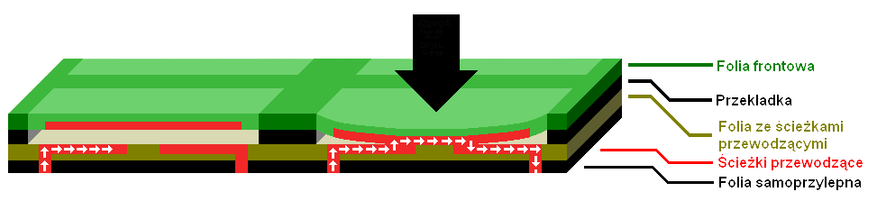
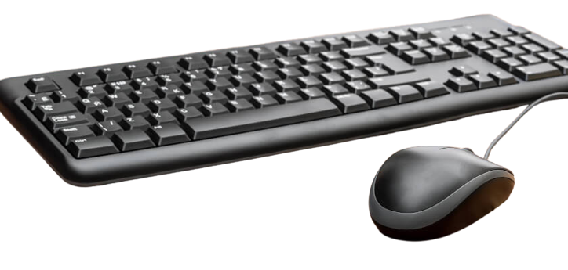
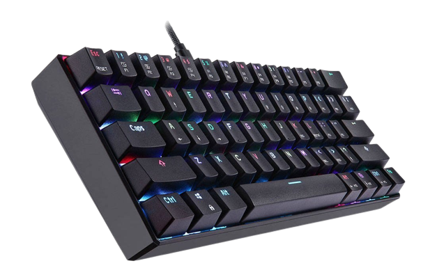
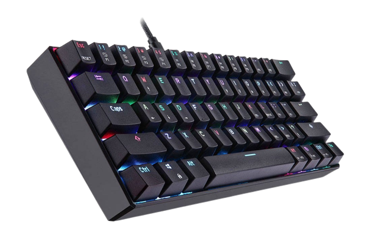
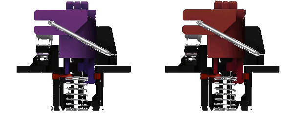
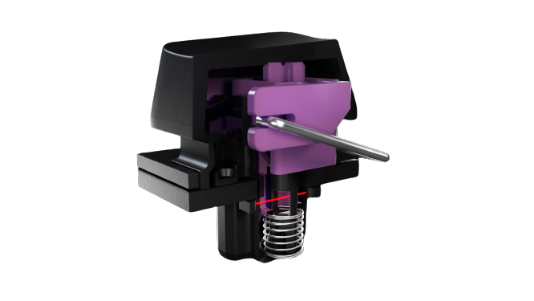
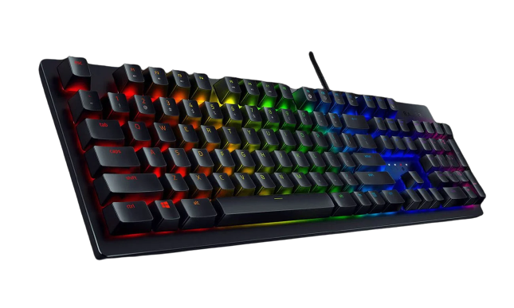

Budowa klawiatury
Klawiatura to urządzenie pozwalające użytkownikowi na wprowadzanie informacji do komputera poprzez naciskanie klawiszy. Chociaż dzisiejsze klawiatury wykorzystują wiele skomplikowanych technologii, ich podstawowa budowa pozostała niezmieniona przez wiele lat. W tym artykule przyjrzymy się bliżej elementom budowy klawiatury, które umożliwiają nam wprowadzanie danych do naszych urządzeń. Omówimy także zasadę działania klawiatury oraz rodzaje klawiatur, które są dostępne na rynku.
|
Klawiatura membranowa to najprostszy i najtańszy rodzaj klawiatury. Składa się z trzech warstw folii z ułożonymi na nich klawiszami oraz elastyczną membraną, która umożliwia naciśnięcie klawiszy. Przy naciśnięciu klawisza, membrana dotyka warstwy z przewodzącym materiałem, co powoduje zamknięcie obwodu i przesłanie informacji o naciśnięciu do komputera. Klawiatury membranowe mają zwykle cichsze klawisze niż inne rodzaje klawiatur, ale ich żywotność jest niższa, a reakcja klawiszy jest mniej precyzyjna.   |
|
Klawiatura mechaniczna ta klawiatura zbudowana jest z pojedynczych przełączników mechanicznych pod każdym klawiszem. Klawisze działają na zasadzie wciśnięcia sprężyny, która zamyka obwód i przekazuje informację do komputera. Klawiatury mechaniczne są zwykle droższe niż klawiatury membranowe, ale charakteryzują się dłuższą żywotnością i większą precyzją w reakcji klawiszy. Ponadto, klawisze w klawiaturach mechanicznych zwykle mają większą wypukłość i bardziej wyraźne odczucie nacisku, co jest cenione przez wielu użytkowników.  

|
|
Klawiatura pół-mechaniczna to rodzaj klawiatury, który łączy w sobie cechy klawiatur membranowych i mechanicznych. Zbudowana jest z przycisków mechanicznych, ale ich działanie jest wspomagane folią membranową, co zapewnia wygodniejsze i cichsze użytkowanie w porównaniu z klawiaturami mechanicznymi. Klawiatury pół-mechaniczne są zwykle droższe niż klawiatury membranowe, ale tańsze niż klawiatury mechaniczne. Ich reakcja klawiszy jest szybsza i bardziej precyzyjna niż w klawiaturach membranowych. |
|
Klawiatura optomechaniczna Klawiatury optomechaniczne łączą w sobie zalety klawiatur mechanicznych i membranowych. W przeciwieństwie do klawiatur mechanicznych, klawisze nie mają wewnętrznych przełączników mechanicznych, a zamiast tego używają czujników optycznych i przełączników. Klawiatury te wykorzystują laser lub diodę do śledzenia ruchu wewnętrznej belki, która znajduje się pod każdym klawiszem. W momencie, gdy naciśniemy klawisz, belka ta zostaje przesunięta, co powoduje, że światło lasera lub diody pada na czujnik światła. Czujnik światła z kolei rejestruje ten sygnał i przesyła go do komputera, który odczytuje i interpretuje nasze wciśnięcie. Klawiatury optomechaniczne charakteryzują się dużą trwałością i wytrzymałością, ponieważ nie mają elementów mechanicznych, które mogą ulec zużyciu. Dodatkowo, ich wewnętrzna konstrukcja jest wodoodporna, co chroni je przed zalaniem. Jednym z wad klawiatur optomechanicznych jest to, że zwykle są one droższe niż klawiatury mechaniczne i membranowe. Jednakże, ze względu na ich szybkość, wytrzymałość i trwałość, są one popularnym wyborem wśród graczy i entuzjastów klawiatur.    |
Każdy z tych rodzajów klawiatury ma swoje zalety i wady, a ostateczny wybór zależy od indywidualnych preferencji użytkownika.